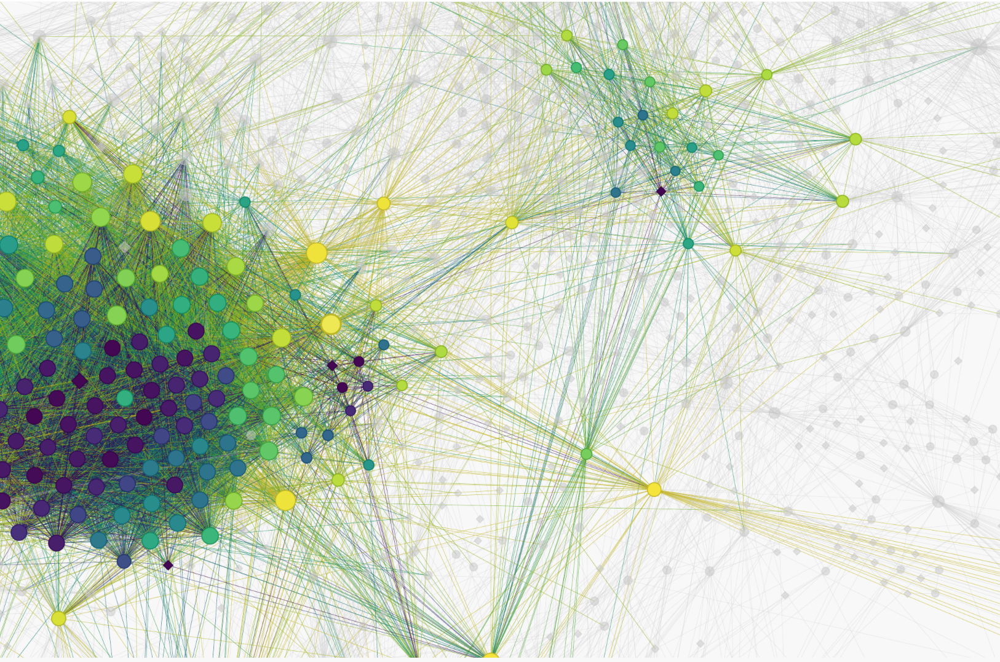

Paul Simmering
About
Blog
Publications
Talks
Projects
Projects
blue.gpt
blue.gpt is an enterprise-grade LLM chatbot for Landesbank Baden-Württemberg (LBBW), a leading German bank. It allows users to securely chat with language models, analyze…
Paul Simmering
2025
AspectWise
Q Agentur für Forschung offers a service for automated analysis of customer reviews in any product category in any European language. I was the inventor and lead developer.…
Paul Simmering
2024
Python package texttunnel
texttunnel is a Python package for efficient interaction with the OpenAI API. I developed it in collaboration with Paavo Huoviala at Q Insight Agency.
Paul Simmering and Paavo Huoviala
2023
Cosmention
Cosmention was an AI-powered social media monitoring tool for the cosmetics industry. A fully automated data pipeline starting from social media APIs and ending in a…
Paul Simmering
2021

StakeX - Organizational Networks from Web Research
StakeX is a network analysis approach for public relations projects. It is in use at Q Insight Agency with clients in public transportation and the energy sector. The…
Paul Simmering
2020
Global Patent Explorer
Freeelance work for Aalborg University, commissioned by Assoc. Prof. Daniel S. Hain and Assoc. Prof. Roman Jurowetzki. The Shiny App visualizes the results of a paper on…
Paul Simmering
2018
Human and AI Decision Making in a Game of Innovation and Imitation
My master thesis (PDF) investigates the use of artificial intelligence (AI) in managerial decision making. The thesis was supervised by Assoc. Prof. Daniel S. Hain and…
Paul Simmering
2018
Do Internet Users have a Positive Willingness-To-Pay for Ad-free Usage of Websites?
In 2014, there was an increase in the number of news papers and streaming services that offered users the option to pay for an ad-free version of their website. As an…
Paul Simmering
2015
No matching items